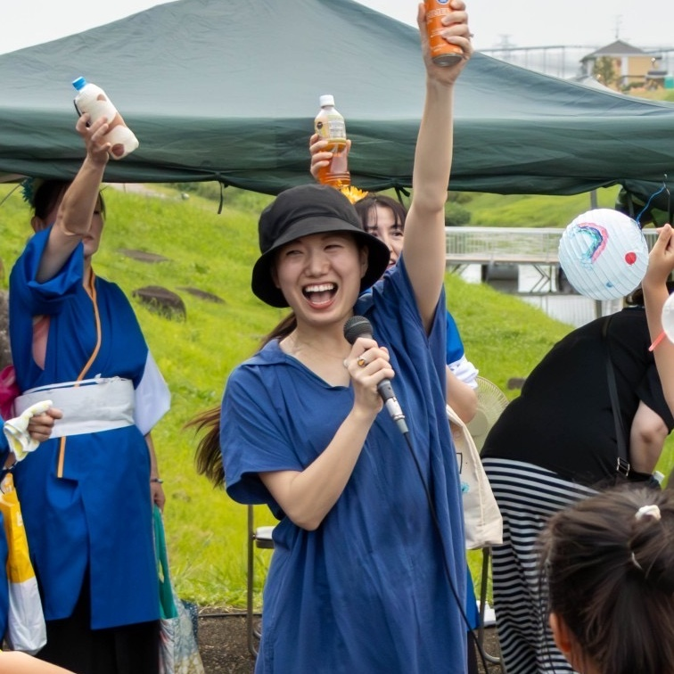

水辺で乾杯 TONEUNGA 2024
ミズベリング利根運河「水辺で乾杯 TONEUNGA」
2024年は7月5日(金)、6日(土)に開催いたします🍺
ボランティア募集中です
ボランティア募集締切: 2024年6月30日（日）
申し込み多数の場合は、先着順とさせていただきます。
※出店者募集は締め切りました。
5日(金)の見どころ
6日(土)の見どころ
7日(日)はクリーン活動

出店・ステージ一覧
画像クリックで開きます
近隣店舗
画像クリックで開きます
実行委員長 挨拶

今年もやってきました、水辺で乾杯 TONEUNGA！利根運河を中心として、子どもや学生からおじいちゃんおばあちゃんまでみんなが笑顔になる空間。
昨年は、ご出店いただきましたみなさまのおかげで、予想の10倍以上の来場者となり、大いに盛り上がり、たくさんの笑顔を見ることができました。
2023年の特設サイトはこちら
今年も、多くの笑顔に出会えるよう、初年度を超えるくらい盛り上げていきたいと思います！みなさまのお力添えよろしくお願いいたします。
水辺で乾杯 TONEUNGA実行委員長
⭐乾杯まであと⭐
日
時間
分
秒
乾杯予定時刻
7月5日 午後7時7分
主催: ミズベリング利根運河 水辺で乾杯 TONEUNGA 実行委員会
事務局: 利根運河交流館(04-7153-8555)